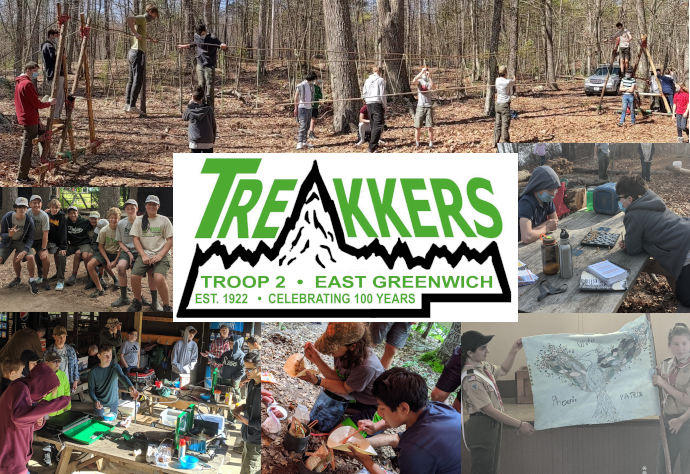
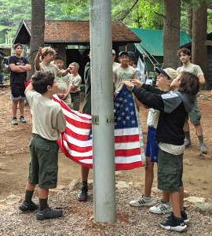
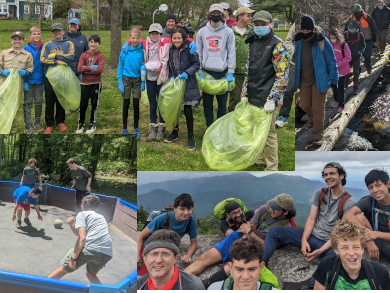
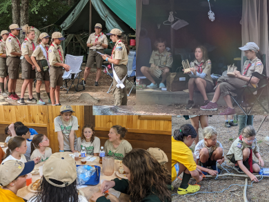
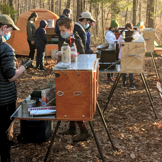
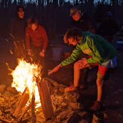
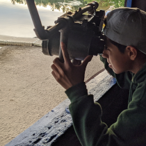
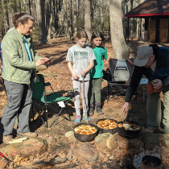

Linked Boys & Girls Scouting America Troops
Did you know Troop 2 was founded in 1922?
We celebrate over 100 years of Scouting!
Troop 2 East Greenwich is a Scouting America Troop chartered by the East Greenwich Boys Home Association and is a member of Narragansett Council - Boy Scouts of America in the Southwest Service Area district. Troop 2 has both a boys and a girls program (two separately chartered Troops) that often combine for meetings, service projects and special events.

What is Scouting?
The Boy Scouts of America is a Scouting organization dedicated to helping youth learn and grow. The Scouts BSA program challenges youth to try new things, with a focus on learning outdoor skills, developing leadership, supporting the community, building lasting friendships, self-confidence, and ethical standards. Troop 2 offers both a boys and a girls program through two separately chartered Troops.

What does Troop 2 do?
We camp, hike, backpack, swim, canoe, cycle, ski, snowboard, play games and sports, learn skills, and serve in our community. We also attend local and regional Scout Camporees to meet, interact, and sometimes compete with other Troops.

Our Program
Our program typically runs from September through June and concludes with a week-long summer camp at Yawgoog Scout Reservation. We meet once a week during the school year and plan one trip a month, except in December.

Equipment
Our equipment includes canoes, tents and shelters, stoves, cooking gear, and expertly crafted patrol boxes. Scouts learn to select, use, and care for their own outdoor gear as well as Troop equipment.
Leadership
Our youth leaders attend National Youth Leadership Training to help prepare them to lead our Troop in all its adventures. Older Scouts often attend national and international Scout events, including the National Scout Jamboree, World Scout Jamboree, Philmont Scout Ranch, and Sea Base.



Visit Troop 2
If you are interested in visiting a meeting, please contact us so we can coordinate and suggest the best time to visit our Troop.
Hart Kelley, Scoutmaster Troop 2 B
scoutmaster.boys@troop2eg.org
Susan Cardones, Scoutmaster Troop 2 G
scoutmaster.girls@troop2eg.org
Enrollment Forms
Troop 2 Boys and Adult Volunteer Application
Troop 2 Girls and Adult Volunteer Application